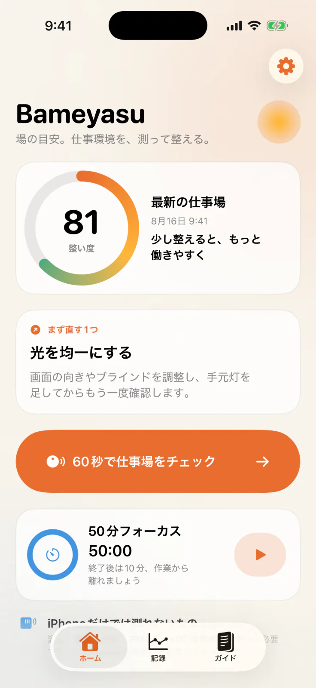
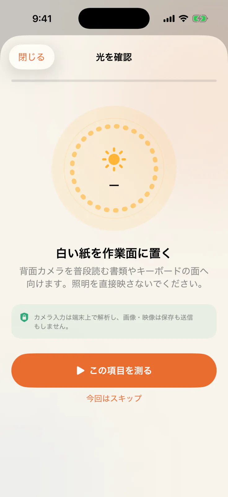
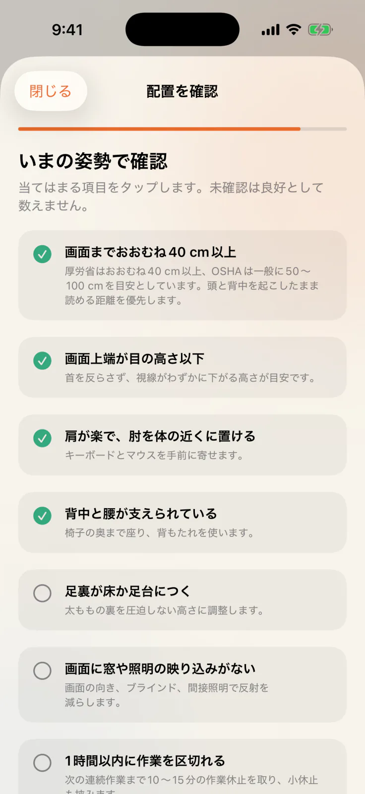
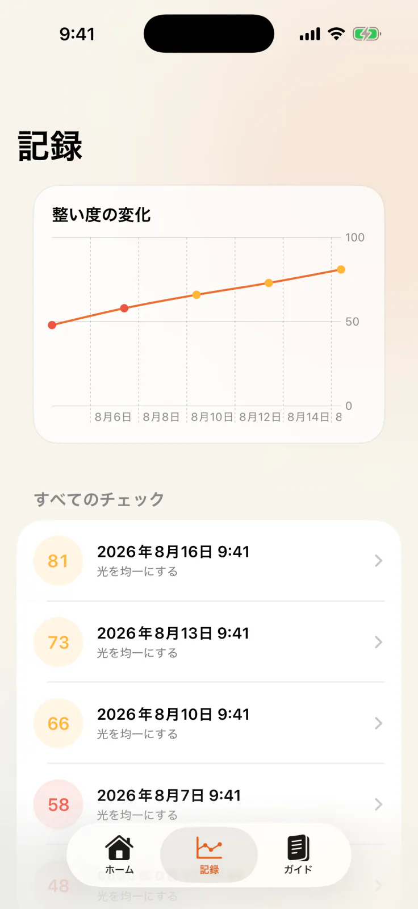
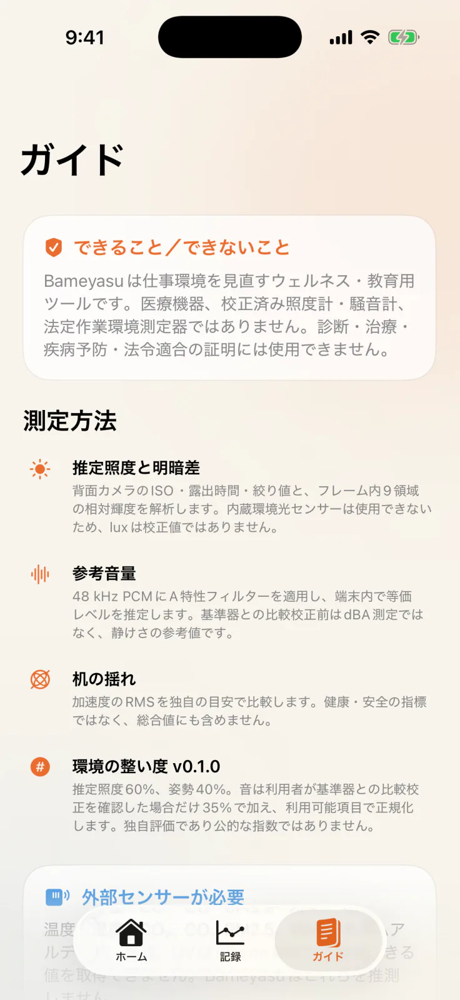

光環境
背面ワイドカメラのISO・露出時間・絞り値と、画面内9領域の相対輝度から作業面の照度と明暗差を推定します。
一般的な事務作業の300 lxを参考に、明るさを見直すきっかけを示します。法令適合を判定する測定ではありません。iPhoneで約60秒
Bameyasuは、iPhoneのカメラ・マイク・モーションセンサーとセルフチェックで、光、音、机の揺れ、姿勢と配置を約60秒で見える化。結果を「環境の整い度」と「まず直す1つ」にまとめ、整える前後の変化を振り返れます。
開発版 v0.1.0 — 日々の仕事場を見直し、整える前後の変化を確かめるためのウェルネス・教育・生産性向けツールです。結果には参考推定値とBameyasu独自のガイドが含まれ、医療機器、校正済み計測器、法令適合の判定器ではありません。

実際の画面
アプリが案内する順序と、結果の使い方が分かる5場面です。表示値と履歴は説明用のサンプルで、実際の結果は端末や環境によって変わります。
環境の整い度と「まず直す1つ」をホームに集約します。

置き方とカメラの向きを、測る直前に具体的に案内します。

画面、椅子、入力機器、休止の7項目を今の状態で見直します。

直近14回の整い度と各チェックを比べ、改善前後を確認できます。

測定できる範囲、計算方法、公的情報の根拠をアプリ内で確認できます。
iPhoneを活かす4つの視点
カメラ、マイク、モーションセンサーとセルフチェックを組み合わせ、仕事場の状態を多角的に見える化します。センサー入力は端末内で処理し、履歴には結果に必要な情報だけを保存します。
背面ワイドカメラのISO・露出時間・絞り値と、画面内9領域の相対輝度から作業面の照度と明暗差を推定します。
一般的な事務作業の300 lxを参考に、明るさを見直すきっかけを示します。法令適合を判定する測定ではありません。周囲の音を15秒の参考値として可視化します。端末が48 kHz付近の入力を提供する場合はA特性処理を適用し、端末内で参考値を算出します。音声内容は認識せず、音声ファイルも作りません。
比較校正前は「参考 dB*」として静けさを見直す手がかりを表示し、比較校正後は整い度にも反映します。Core Motionを30 Hzで使い、机の小さな揺れと傾きを可視化します。がたつきや振動源を見つける手がかりに使えます。
整い度とは分けて、机まわりを整えるための参考値として表示します。健康・安全・構造評価には使用できません。画面距離と高さ、肩・肘、背中・腰、足裏、グレア、作業の区切りを7項目で確認します。
確認済みの項目数を結果に反映し、最初の未確認項目を次に見直すポイントとして提案できます。使い方
確認したい項目を選んで進められます。権限は必要な工程で個別に確認し、スキップしても次へ進めます。
普段仕事をする状態にiPhoneを置きます。
光、音、机、姿勢と配置を順にチェックします。
優先度の高い提案から試し、次の記録と比べます。
前後の変化を比較
カメラ、マイク、モーションセンサーとセルフチェックを使った工程を同じ流れで進め、計算済みの結果を記録します。光と姿勢・配置を軸に、必要に応じて比較校正した音も加え、次に試す改善とその前後の変化を振り返れます。
比較校正済みの音 +35%（利用できる場合）
利用できる重みを100へ正規化。光と姿勢・配置が揃うと整い度を表示します。
推定照度60%、姿勢と配置40%。音は利用者が基準器との比較校正を確認した場合に加え、利用できる項目から整い度を組み立てます。
机の揺れと未校正の音は個別に表示し、整い度と分けて改善に活用できます。机の値は健康・安全・構造評価ではありません。15秒の音量は短時間の参考値で、8時間の時間加重平均や法定測定の代わりにはなりません。
環境の整い度は、確認できた項目をまとめたBameyasu独自の目安です。同じ席・手順で記録し、改善前後の変化と次の一歩を考えるために使えます。健康、安全、快適性、生産性、法令適合の保証や判定には使用できません。
専用機器で別途確認
Bameyasuはこれらを測定対象にせず、必要に応じて適切な外部測定器で確認する項目として案内します。
数値の位置づけ： v0.1.0はエンジニアリングプロトタイプで、カメラ照度と参考音量を仕事場を見直すための参考値として表示します。トレーサブルな基準器を使った複数機種での検証研究は未完了です。
プライバシー
アカウント登録なしで使え、チェックは端末内で処理します。履歴と設定もiPhone内に保存し、広告、分析SDK、クラッシュ収集SDK、クラウド同期を使わない設計です。
発効日：2026年8月16日
カメラ、マイク、モーション入力は対応するチェック中だけ端末上でリアルタイム処理し、保存・送信せずに破棄します。音声認識も行いません。履歴にはチェック結果の要約を保存し、設定も別途端末内に保持します。
完了したチェックの日時、計算済み指標、チェック回答、提案、評価アルゴリズム版と設定をアプリのサンドボックスに保存します。
履歴にはチェック結果に必要な情報だけを保存し、画像、音声、生のフレームやサンプル、連絡先、位置情報、識別子、広告データは含めません。
履歴は個別に削除できます。アプリを削除するとサンドボックス内のデータも削除され、権限はiPhoneの設定からいつでも撤回できます。
チェックはBameyasuのサーバーへ通信せずに進みます。利用者が外部リンクを選ぶと、遷移先へIPアドレスやUser-Agent等の通常のアクセス情報が送られ、そのポリシーが適用されます。
アプリが自動的に収集するデータについて、App Store申告予定は「データを収集しない」です。利用者が選んで送るサポートメールも含め、機能追加時と各リリース前に確認します。
一般的な生産性向けツールとして、子どもを含むすべての利用者に同じデータ方針を適用し、アプリを通じて個人情報を意図的に収集しません。
利用者がsupport@hinoshiba.comへメールを送ると、管理者はhinoshiba.comのメール事業者を通じて送信者アドレス、ヘッダー、本文、任意の添付を受領します。返信、サポート、報告調査、不正利用防止、法的・セキュリティ上の義務に合理的に必要な範囲と期間で扱います。これらの義務に反しない範囲で、同じ宛先へ削除も依頼できます。
利用上の注意
改善のヒントとして安心して使えるよう、結果の位置づけと安全上の注意をまとめています。
発効日：2026年8月15日
Bameyasuはウェルネス・教育・生産性向けツールです。医療機器、診断、治療、疾病予防サービス、校正済み照度計・騒音計、法定作業環境測定器ではありません。
推定値とBameyasu独自の目安を、改善の順番を考える参考にできます。健康、安全、快適性、生産性、法令適合を保証するものではありません。
カメラ・マイクの推定値は、iPhone機種、ケース、マイク経路、設置、向き、反射、光源の分光特性、風、操作、周囲音、校正状態で変化します。
健康、雇用、労働安全衛生、緊急対応、規制上の判断では、Bameyasuだけを唯一の根拠にせず、適切な専門家や正式な測定を活用してください。
症状、強い不快感、危険な音、燃焼ガス、煙、高温その他の危険が疑われる場合は、その場を離れ、状況に応じて事業者、産業医、医療機関、緊急窓口または有資格の測定専門家へ相談してください。
各カードから公的情報の原典を確認できます。要点はBameyasuが独自に整理したもので、発行機関による推奨・承認を意味しません。
ソースコードにはMIT Licenseが適用されます。アプリストアからの配布には当該ストアの条件も適用される場合があります。第三者OSSが追加された場合は各コンポーネントのライセンスが優先します。
根拠となる情報源
公的機関の一次情報から、仕事場を見直す要点をBameyasuが独自に整理しています。各カードから原典を直接確認できます。各機関による推奨・承認を示すものではなく、原文・図表・ロゴは転載していません。最終確認：2026年8月15日。
一般的な事務作業の作業面は300 lx以上。著しい明暗差とまぶしさも避けます。
公式情報を開く ↗ 日本 · 情報機器作業約40 cm以上の視距離、画面上端、グレア低減、1時間以内の区切りと10〜15分の作業休止。
公式情報を開く ↗ U.S. · Occupational noise職業ばく露の文脈として、85 dBAの8時間時間加重平均と3 dB交換率を示しています。Bameyasuの15秒値はその場の音を見直す短時間の参考で、8時間ばく露は判定できません。
公式情報を開く ↗ U.S. · Monitor setup一般的な視距離50〜100 cm。読みやすさと直立姿勢を優先する追加文脈として参照します。
公式情報を開く ↗ 日本 · 建築物環境対象空調居室の温度18〜28°C、湿度40〜70%、CO₂ 1000 ppm以下、CO 6 ppm以下。これらは適切な外部測定器で確認し、Bameyasuでは測定・合否判定を行いません。
公式情報を開く ↗サポート
使い方の相談、プライバシーやセキュリティの報告、その他の質問はsupport@hinoshiba.comへ。公開してよい不具合報告と機能提案はGitHub Issuesで開発に共有できます。
Open source
BameyasuのソースコードはMIT Licenseで公開中です。測定ロジック、テスト、設計判断をリポジトリで確認できます。ブランド資産はMIT Licenseの対象外です。